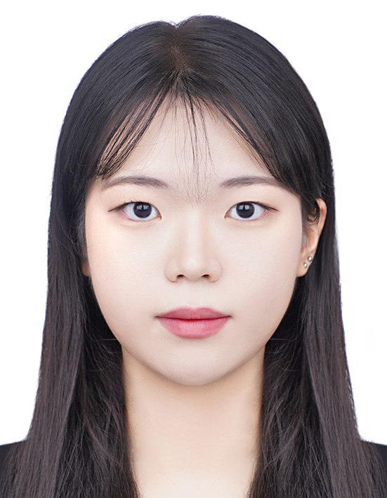

Members
PI
Changjun LEE | 이창준
Sungkyunkwan University (SKKU)
School of Convergence.
Dep. of Culture & Technology (Head)Graduate School
Dep. of Interaction Science
Dep. of Immersive Media Engineering
(Metaverse Graduate School)
As a computational social scientist, CJ brings a unique interdisciplinary perspective to the fields of economics, innovation studies, and convergence technologies. With a background in natural sciences, including a bachelor’s degree in biology and chemistry, I went on to earn a Ph.D. in technology management, economics, and policy. His global research experience includes working as a postdoctoral researcher at the National University of Singapore and University College Dublin. My research focuses on utilizing computational methods to tackle a wide range of social phenomena, including technology evolution & regional growth, knowledge management, and technology & convergence innovation. He was responsible for the Department of Media & Social Informatics and the Institution of Creativity & Interaction at Hanyang University in South Korea, and now He has joined the School of Convergence at SungKyunKwan University. He is passionate about using technology and data to drive innovation and solve real-world problems.
Postdoc Fellow
Yun-Woo CHOI | 최윤우
Sungkyunkwan University
Institution of Interaction Science
✉ yunwoochoi1004@daum.net
Yun-Woo Choi is completing a Ph.D course in advertising and public relations at Hanyang University, South Korea. Her main research focuses on digital media and advertising, consumer behavior, and data science. She’s got the Best Paper Award presented to Influences of Social-Face Sensitivity and SNS Social Capital on Ethical Consumption in Korea at the 11th International Conference Convergence Technology 20201 hosted by Korea Convergence Society.
Ph.D. Students
Seung Kyung LEE | 이승경

Hanyang University
Dep. of Media & Informatics
✉ leesinganna@hanyang.ac.kr
Master’s degree Students
Ye Seo LIM | 임예서
Graduate School of Immersive Media Engineering
Sungkyunkwan University
✉ ivisy6952@g.skku.edu
YS majored in media and social informatics and double majored in computer science. She is interested in the convergence of social science, such as media contents, and engineering science, such as computing and AI.
김수연
Pic
Graduate School of Interaction Science
Sungkyunkwan University
✉ mail
Bio
Gahui KIM | 김가희
Graduate School of Immersive Media Engineering
School of Convergence (Dep. of Culture & Technology)
Sungkyunkwan University
✉ gahee020907@g.skku.edu
Gahui majored in Culture&Technology Convergence and International Trade. She is interested in cultural content and immersive media, focusing on the relationship between user experience and content.
Yebom CHOI | 최예봄

Graduate School of Interaction Science
School of Convergence (Dep. of Culture & Technology)
Sungkyunkwan University
✉ yebom618@g.skku.edu
Yebom majored in Culture&Technology Convergence and double majored in Psychology. She is interested in the high technology industry based on understanding of humans.
Undergraduate Researcher
Ga Hyeon KIM | 김가현
School of Convergence (Dep. of Culture & Technology)
Sungkyunkwan University
✉ mulik425@g.skku.edu
Ga Hyeon majored in Culture &Technology Convergence and double majored in Department of Computer Science and Engineering. She is interested in Entertainment and Content Business based on AI & Immersive Technology.
Seonwoo LEE | 이선우
School of Convergence (Dep. of Culture & Technology)
Sungkyunkwan University
✉ sw122@g.skku.edu
Seonwoo majored in Culture&Technology Convergence. She is interested in artificial intelligence and immersive media, focusing on user experience through the study of the human cognitive science and psychology.